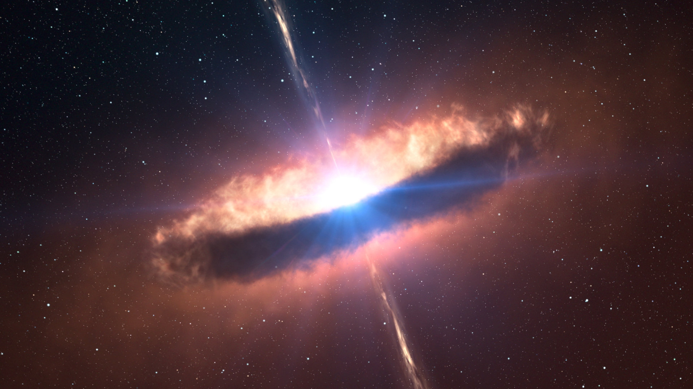

Como as estrelas nascem
As estrelas se formam em enormes nuvens de gás e poeira chamadas nebulosas. Quando uma região da nebulosa se torna densa o suficiente, começa a colapsar sob sua própria gravidade. Estrelas jovens brilham intensamente na luz ultravioleta, enquanto a luz visível revela a estrutura das nuvens de formação estelar, as ondas de choque causadas por jatos de estrelas em formação e o gás ionizado colorido nas nebulosas energizado por estrelas jovens. Os comprimentos de onda mais longos da luz infravermelha conseguem atravessar a nuvem com relativamente pouca interferência. Os instrumentos de infravermelho próximo do Hubble e seu alto poder de resolução conseguem detectar essa luz que escapa, revelando regiões profundamente embutidas nessas nuvens, onde estrelas recém-nascidas se formam. Essas capacidades fazem do Hubble uma ferramenta essencial no estudo de estrelas em desenvolvimento.